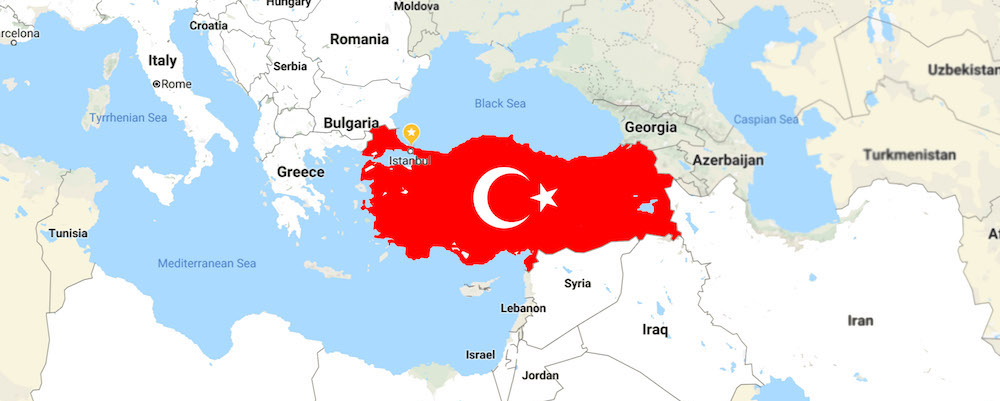

If you purchase real estate in Turkey that is worth at least $400,000 USD, you can apply for Turkish Citizenship by Investment and obtain a Turkish Passport. Along your application, your spouse and any children under the age of 18 will also be granted citizenship.
Apply for Turkish Citizenship by Investment
In June 2022, the government announced changes to their Turkish Citizenship by Investment Programme, sometimes called Turkey Golden Visa. These changes mean that buyers can obtain citizenship and a passport from as little as $400,000 USD. This has made the programme one of the most affordable and attractive citizenship initiatives around the world. Since then, thousands of investors have obtained citizenship through purchasing real estate, with Property Turkey helping many.
Those who are successful in their application, will have Turkish citizenship forever and any children born after will be born as citizens. Turkey allows dual nationality, allowing you to keep multiple citizenships alongside your Turkish one.
Different ways to obtain Turkish Citizenship by Investment
1 – Acquire real estate investment worth at least $400,000 USD. The cheapest option
2 – Make a fixed capital investment of at least $500,000 USD in Turkey
3 – Bank deposit into a Turkish Bank at least $500,000 USD or equivalent foreign currency
4 – Acquire Government Bonds of at least $500,000 USD or equivalent foreign currency
5 – Create jobs for at least 50 people in Turkey as attested by the Ministry
6 – Minimum $500,000 USD into real estate investment fund or venture capital investment fund
Requirements for Real Estate Investment Programme
- Applicants need to purchase a property that is worth at least $400,000 USD. This does not need to be a single unit, it can be multiple units, with provisions of regulations.
- Applicants need to keep the purchased real estate for a minimum of 3 years. This 3-year commitment needs to be registered as an annotation within the Title Deed and/or Notarised Sales Contract.
- An Official Valuation Survey must be undertaken by the authorities, announced by the Banking Supervision Board. The valuation report must be determined to be at least $400,000 USD.
- The purchase price must be paid to the seller via a bank transfer and needs to be supported by bank receipts. This proves that the transaction has been made.
- The official declared value of the investment must be worth at least $400,000 USD at the time of the Notarised Sales Contract and/or its ownership transfer made at the Land Registry Office.
- Any such property within this scope must not be registered under any foreign real person’s name, including the applicant’s spouse or children. Real estate that has been transferred by the applicant’s spouse or kids after 12.01.2017 are not within the scope of the regulation.
- If the applicant has purchased a residence using a mortgage loan, the value of the mortgage will be deducted from the value stated within the Official Valuation Survey.
- Application will be sent to the Ministry of Internal Affairs, General Directorate of Population and Citizenship Affairs, Directorate of Foreigners Department, through the Ministry of Environment and Urbanisation, Land Registry Office.

How to obtain a Turkish Passport through buying property?
Step 1 - Get a Tax Registration Number
Step 2 - Open a Turkish Bank Account
Step 3 - Find the property for sale
Step 4 - Buy the property in Turkey
Step 5 - Obtain the Certificate of Conformity
Step 6 - Apply for Turkish Residency
Step 7 - Apply for Turkish Citizenship
Steps for Turkish Citizenship Application by Real Estate Investment
Step 1 – Get a Tax Registration Number
Tax Registration number can be obtained from any tax office in Turkey. Original Passport and Photos are required.
Step 2 – Open a Turkish Bank Account
Documentation of transactions during the buying stage will be necessary. Original Passport and Tax Registration Number are required. An Official Document (such as Public Utility Bill) that shows your current address is required to open a bank account.
Step 3 – Find the Property
Needs to be a Total Value of $400,000 USD or equivalent in Turkish Lira (can be single or multiple units). Properties must be Completed, or Close to Completion with Habitation License granted and Construction Servitude or Title Deed ready. Must be suitable for an Official Valuation Survey.
Step 4 – Buy the Property
Use a Bank Transfer and document the transaction by receipt. Get the Title Deed Registry and/or Notarised Sales Contract annotated with “Not To Be Sold For 3 Years” as part of the requirement. After three years, you can sell your property investment in Turkey as your citizenship is guaranteed forever.
Step 5 – Obtain the Certificate of Conformity
Provide the Official Valuation Survey and submit the Bank Transfer Receipt. Apply to Ministry of Environment and Urbanisation.
Step 6 – Apply for Turkish Residency
Gather the required Documents before applying for your residence permit. Apply to Directorate General of Migration Management. The residence permit is an important step to receiving your citizenship and eventual passport.
Step 7 – Apply for Turkish Citizenship by Investment
Gather the required Documents before applying for Citizenship. Apply to Directorate General of Migration Management. NOTE: Property Turkey’s in-house lawyers are there to guide you through every step.
Facts about Turkish Citizenship by Investment Program
- You will need to keep all of your investments for 3 years.
- You are free to sell your property once the required time has expired.
- The applicant, spouse of the applicant, and any children under 18 will be granted Turkish Citizenship.
- You are not required to live in Turkey in order to make use of the Turkish Citizenship by Investment Programme.
- Your Citizenship will remain forever and any children born after will be citizens of Turkey.
- You can keep multiple citizenships as Turkey allows dual citizenship.
Required Documents needed for Turkish Citizenship by Investment?
– Birth Certificate – Each copy of the birth certificate needs to be stamped and authenticated OR Apostilled in accordance with the Apostille Convention.
– Certificate of Residence – Proof of address needs to be provided. Bank statements or utility bills will NOT be accepted. Each certificate needs to be stamped and authenticated OR Apostilled in accordance with the Apostille Convention.
– Marital Status – Vital Record that shows all family members as the husband, wife and children, Marriage Certificate, Divorce Certificate. Each certificate needs to be stamped and authenticated OR Apostilled.
– If the applicant is widowed, Spouse’s Death Certificate
– Health Insurance
– 12 Biometrics Photos taken on white background – 4 Biometric photos taken against a white background and sized 5x6 are required for all persons applying. 8 more Biometric photos regular sized taken against a white background are required from the main applicant.
– Passport – A copy of your original Passport.
– Original and Notarised Turkish translation of all documents
– Power of Attorney granted
– Application Forms – All completed and filled in correctly.
Professional Assistance for Turkish Citizenship
With over 20 years of experience in the Turkish real estate market, Property Turkey offers a wide selection of Investment and Lifestyle properties for sale. We have carefully and diligently picked a selection of properties that are pre-approved for our A-Z “Citizenship by Investment Program” – making the process quick and easy for our clients. Our dynamic team of professional investment consultants are on hand to answer any questions that you might have about the program, as well as provide the most suitable options meeting all of your requirements. Not only that, but our in-house lawyers are fully qualified to assist you in all legal matters throughout your application. We have helped more than 1,000 clients from over 18 countries invest in thousands of Turkish properties over the years. As an industry leader, we guarantee our bargaining power can help secure the best prices and favourable payment plans for our clients.
Why invest in Turkey?
Amazing climate – A lot of Turkish cities offer 300+ days of sunny weather. For example, investing in a property in Bodrum guarantees a lovely lifestyle of glitz, glamour, and weather. Investors in Antalya can enjoy beaches and skiing within the same day. British investors in Fethiye real estate can enjoy the world famous Blue Lagoon beach.
Strategic location – Turkey is strategically located between the East and West, affectively becoming the bridge between the two. Because of this, Turkey offers unique opportunities in business as well as visa-free travel. Investors in Istanbul real estate can enjoy a gateway of accessibility.
Ideal for families – Those who move to Turkey with families often comment on how hospitable and friendly Turks are. Turkey is a welcoming country towards foreigners and expats with some of the best international schools around.
Healthcare in Turkey – Rising as one of the world’s leading healthcare destinations and medical tourism, Turkey offers healthcare that is second to none – and extremely affordable when compared to other countries around the world.
Food in Turkey – Need we say more. Turkish food is renowned globally for its unique tastes and rich ingredients. From fresh vegetables daily to classic kebabs and desserts, food in Turkey is delight in its own right.
Excellent value – With the depreciation of the Turkish Lira, the time to buy real estate in Turkey is right now, before prices rise. Invest in Turkey and you can pick up a villa to meet the $400,000 USD requirement in certain cities or a city centre apartment rising in Istanbul.
Regional powerhouse – at the front of countries in the surrounding region, Turkey is an EU Candidate Country, as well as G20 and NATO Member. The future of Turkey looks positive.

Turkish Citizenship by Investment FAQ’s
How long does it take to obtain Turkish Citizenship?
In Property Turkey’s experience, it normally takes between 2 – 4 months to complete the process for our clients to obtain Turkish Citizenship by Investment program. This process is a lot quicker than other countries around the globe which can take years.
Can my children and dependents obtain citizenship?
Yes. If you purchase a property worth $400,000 USD, you can obtain citizenship and a Turkish passport for yourself, your spouse, and children under 18 years of age. Any kids that are over 18 will need to purchase real estate in their own name worth $400,000 USD.
After I have Turkish Citizenship and passport, do I need to live in Turkey?
No. You do not need to live in Turkey in order to keep your citizenship and passport. There are no minimum required days per year that you have to stay in Turkey. Your Citizenship is yours for life.
Do I have to give up my birth citizenship in order to become a Turkish citizen?
No. You do not have to give up the citizenship of your birth in order to become a Turkish citizen because Turkey allows its citizens to keep dual nationality and passports.
Will my Turkish Citizenship expire at some point?
Your citizenship will never expire. Once you have completed the process and held your property for a minimum of three years, your citizenship is guaranteed forever. This is the same for your spouse and any children include within your application.
Do I need to learn Turkish to get a Turkish passport?
While other citizenship programs and countries require you to pass a language test in order to obtain a passport, Turkey does not. You do not need to learn Turkish in order to apply for a passport. However, if you choose to live in Turkey permanently, it is highly recommended to learn the basics of the language in order to easily integrate into life within the country.
How strong is a Turkish passport? How many countries can I travel to?
Having a Turkish passport provides visa-free access to more than 100 countries around the world. These countries include: Japan, South Korea, South America, and more. Someone with a Turkish passport can also travel relatively easily to the USA, United Kingdom, Canada, Australia, and European Union countries. NOTE: A Turkish passport is renewable every ten years.
Relocating to the UK or USA
As a Turkish national, you can apply for a Business Person visa to live and eventually obtain British citizenship. You can also apply for the E-2 Investor Visa to help relocate to the USA. If you dream of living in the UK or USA, Turkish Citizenship can be the gateway.
Do I need to declare my wealth to Turkish authorities?
No. Turkish tax authorities will not ask you any questions regarding your current financial status or existing assets.
Are there tax implications I should know about?
As of 2022, Turkey has double taxation agreements with most countries throughout the developed world. Therefore, if you have paid taxes on your income earned from outside of Turkey, it is unlikely that you will be taxed again by the Turkish government. For more information, contact us to speak with a Turkish tax expert.
Are there any nationals who cannot apply for Turkish Citizenship?
Under current Turkish law, there are citizens of certain countries that are prohibited from applying for Turkish Citizenship by Investment. Presently, these are nationals of the following countries: Armenia, Cuba, North Korea, and Syria.
Can I work in Turkey if my application is successful?
Yes. Those who apply for citizenship and obtain it, are then free to work in Turkey without the need of a work permit. Citizenship makes it easier to work in Turkey.
Do I need to undertake Military Service?
No. Applicants who have invested in Turkey and obtained their citizenship are exempt from mandatory military service. This also includes your dependents who have applied alongside you.
What are the inheritance laws of Turkey?
Turkish law fully protects its citizens and legal heirs in the unfortunate event of a death. Under Turkish law, your property and investment will smoothly pass down to your loved ones without much red tape.
Can I pay using a currency that is not Turkish Lira?
UPDATE: As of January 2022, buyers can no longer deposit money straight into the account of the seller. Instead, foreign buyers are now required to send their funds to a Turkish bank prior to purchasing a property. The bank will then exchange the currency via Turkey's Central Bank rate into Turkish Liras for the purchase.